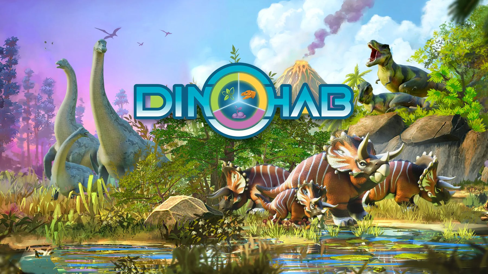
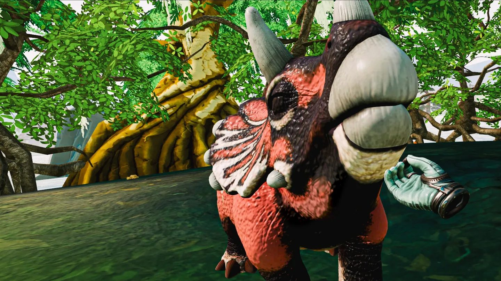
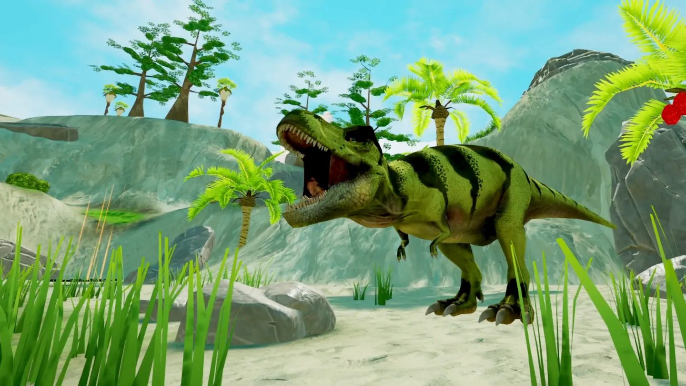
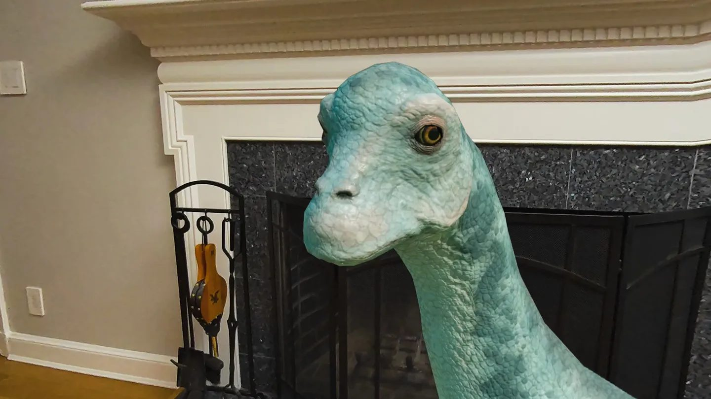
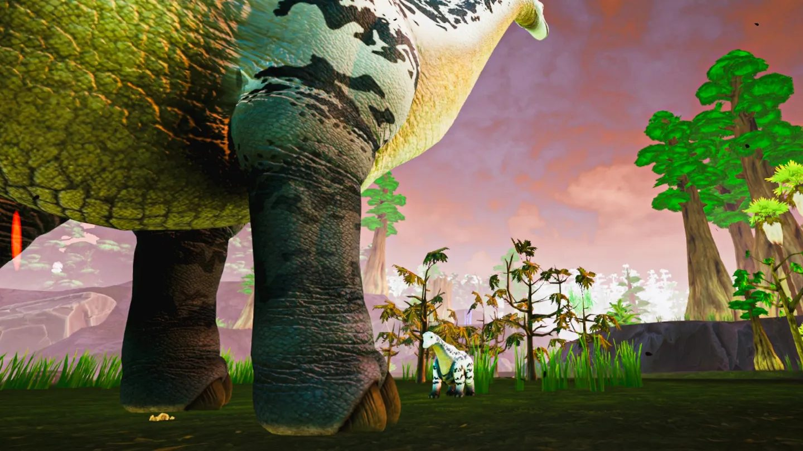
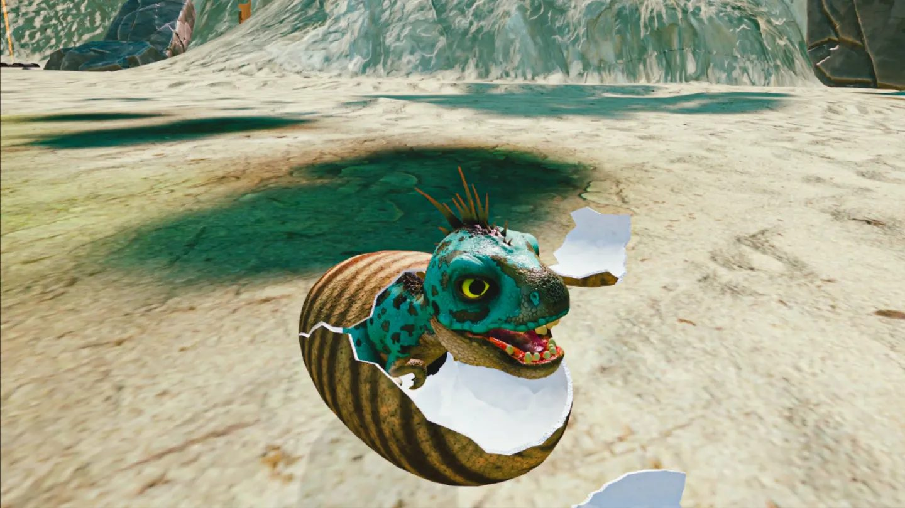
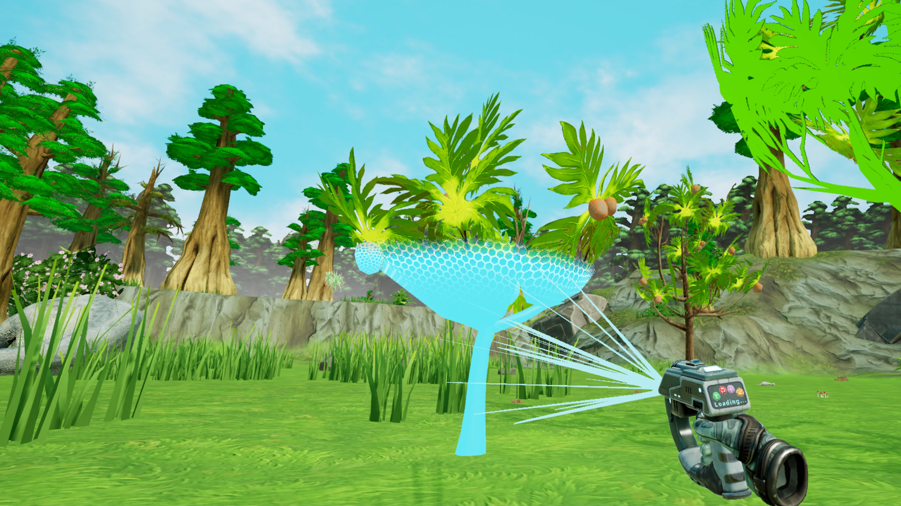

Plants & Fungi System Overview
Core systems work covering the ecology-facing features I owned and carried through implementation.
Dark Slope
Game Designer · April 2023 – October 2025
Mixed reality and VR ecosystem management project centered on habitat restoration, creature care, progression, and readable player feedback. My role sat between systems design, onboarding design, milestone planning, wireframing, and production support. I designed core ecology-facing features, oversaw their implementation, tested them in-engine, and configured them before release.
These samples show the feature work I designed, oversaw through implementation, tested, and configured before release. I owned the plant, fungi, and waste-harmony side of the project, while also contributing onboarding, behavior, and product-structure material.
Core systems work covering the ecology-facing features I owned and carried through implementation.
Implementation-facing plant design work tied to habitat readability, placement, and progression.
Supporting design for fungi behaviour, player-facing clarity, and system interaction.
Tuning-oriented material used to shape how the habitat visually and mechanically responded over time.
Behaviour support sample showing how player guidance and companion logic were structured.
Wireframe sample illustrating broader planning and flow support alongside systems ownership.






